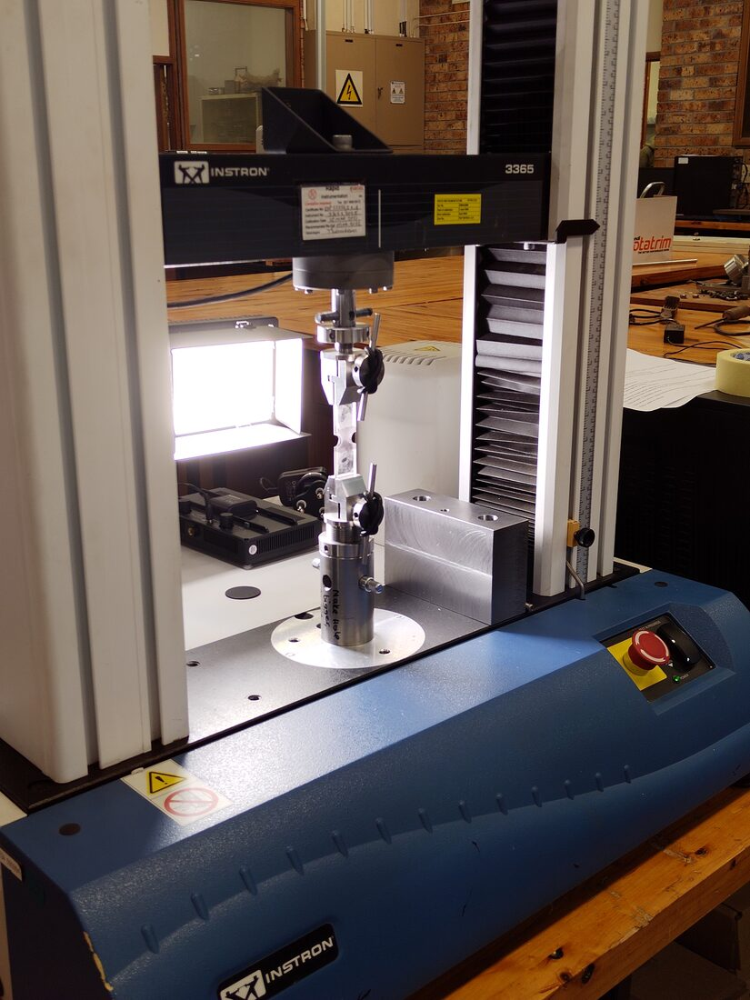
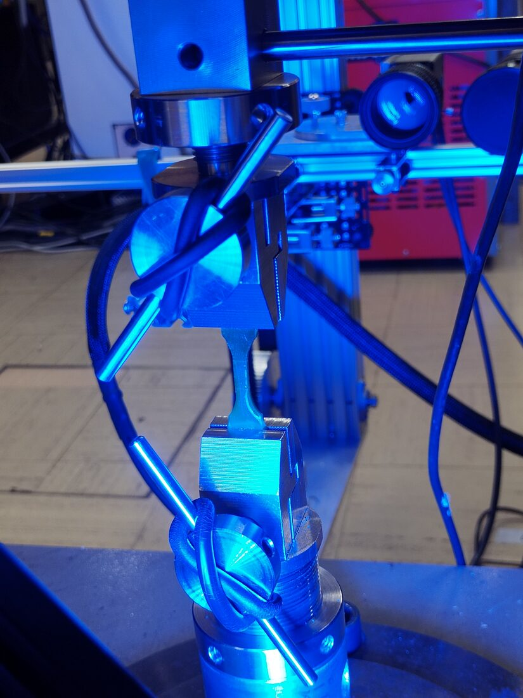

I have been given various equipment design and maintenance jobs in the lab which have
been incredibly educational for me. Many of the lessons I have learned can be traced back
to these unique tasks. The following are some examples of things I have done.
Custom vacuum stirring device for chemical reactions
The assembled magnetically coupled stirrer.A normal magnetic stirring setup with the 'pill'.
One of the researchers in the lab was struggling with keeping chemical reactions
stirring under vacuum. The general method for doing this is to place a magnetically
polarized PTFE-coated bar in the beaker which, given a rotating magnetic field, will
spin. The problem was that when the fluid became too viscous, the magnetic field was
not strong enough and the stirrer would stop spinning. What he needed was a
magnetically coupled, chemically inert stirring device strong enough to stir through
viscous fluids. To maintain chemical inertness, everything on the reaction side of the
vacuum seal was machined from PTFE. The design consisted of an inner rotor coupled to
an outer rotor using neodymium magnets—the outer rotor was driven by a motorized
overhead stirrer.
A section view and assembly image of the design.
Automation of a desktop-sized injection molding machine
I spent much of my spare time attempting to take a decades-old, manually operated
injection molding machine apart and rebuild it by driving it with a geared three-phase
motor and a sprocket and chain. The project neared completion before it was
discontinued due to a blown heating coil and lack of necessity, but I regard it as one
of the most educational experiences of my time at UCT.
The machine before I got my hands on it.A mold mounted to the machine. The mistake I made designing the mounting system was underestimating how much frame stiffness was needed. It turned out to be too easy to misalign.
A very messy prototype circuit on breadboards before I moved to protoboard.
The machine had three main systems which needed automation:
The heating, which heated the thermoplastic to >300 °C. This originally
was done via a manual dial on the side which didn't even have temperature labels!
Just 'hot' and 'less hot', presumably.
The compression—there was a shaft that ran axially through the length of the
machine, which was actuated by a pinion gear, which itself was machined into a shaft
with a spline fit on the end. The image to the side shows the shaft and pinion gear
(machine-native) with a model of a sprocket (which was my addition). Originally,
there was just a drill press-style handle on the end of the pinion gear shaft, which
did not allow for any kind of injection pressure control.
The mold clamping. At the bottom of the machine, the mold needed to be clamped
during injection to hold pressure, then separated after the part had cooled. This
was also done by a drill press-style lever originally.
I was given the project in 2023 originally and immediately made several mistakes in
the original design phase. At the time, I was much less aware of my own inexperience as
I am now. Regarding actuating the compression shaft, I knew I would need a fairly large
motor and significant gear reduction (I needed 322 N*m of torque at the pinion gear for
50 MPa of injection pressure), but I had grandiose dreams of designing my own gearbox.
I quickly realized that not only was it a bad way to save money, but it was a
significantly larger task than anticipated.
Refurbishment of a microslice
A microslice is a device that abrasively cuts slices of material for scientific
purposes (usually microscopy). The CME had a microslice for years that lay
nonfunctional because bad shaft design (a rotating shaft loaded at its end, supported
by a singular bearing far away) meant the shaft kept breaking. To fix this, I gutted
many of the inner components, including the electronics, and re‑built it from the
inside. Ensuring concentric rotation was essential in this design.
Low-force tensile grips
This was a relatively simple job having grips machined from stainless steel round bar.
This was first done in January 2024.


The grips mounted on a 5 kN Instron frame (left) and adapted to a 200 kN Zwick frame (right).
The first pair worked well (when the gripping faces were laser engraved for greater
friction) but their design contained unnecessary machining steps. In July 2026, I
designed a second pair, this time for the Zwick (a larger tensile frame), and
simplified the design so they would be easier to machine.
The second pair of grips designed for the Zwick.
Camera positioning system
The CME uses optical extensometry for tensile testing due to its superiority over
machine crosshead displacement as a strain metric. This required a custom
machine-mounted frame for positioning the camera in different places for different
tests. There was already one there which was hastily put together and not very
ergonomic or robust—it used a C-clamp which had to be repositioned each time the
camera was moved!
The clamp formerly used to keep the system in place.
I designed a new frame with aluminum extrusion, plates and wheels, and belts and
pulleys. This allowed it to move up and down, forward and back, and side to side,
allowing maximum positioning freedom.